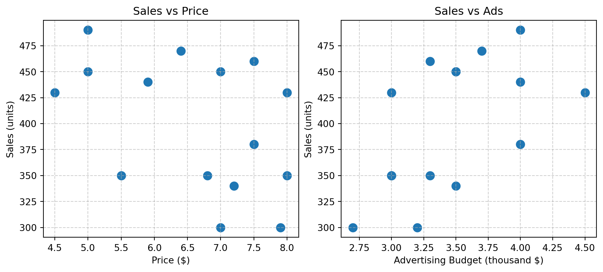

import numpy as np
import pandas as pd
import matplotlib.pyplot as plt
import seaborn as sns16 Linear Regression
Linear regression is a useful tool for understanding relationships between quantitative variables and for predicting a response variable.
This session focuses on Simple Linear Regression (SLR) and Multiple Linear Regression (MLR). We will train linear models in Python, retrieve coefficients and residuals, make predictions on new data, and visualize results (scatter with regression line for SLR; 3D surface for MLR). We will also compute and interpret common goodness-of-fit measures (sum of squares, standard error, (R^2)) and briefly illustrate model selection using these metrics.
16.1 Simple Linear Regression (SLR)
Simple Linear Regression is a linear regression model that describes a dependent variable (its variation) by using a single independent variable.
16.1.1 Data Preparation
We will use a toy “pie sales” dataset with Sales as the target and Price and Ads as predictors.
# Create the dataset
dat = pd.DataFrame(
{
"Price": # house price(dependent variable)
[245, 312, 279, 308, 199, 219, 405, 324, 319, 255],
"Size" : # house size (independent variable)
[1400, 1600, 1700, 1875, 1100, 1550, 2350, 2450, 1425, 1700]
}
)
# Display the dataset
print(dat.head()) Price Size
0 245 1400
1 312 1600
2 279 1700
3 308 1875
4 199 1100For readability in the following code, we separate inputs and output:
# Features (X) and target (y)
Y = dat["Price"] # use a Series for convenience
X = dat["Size"]Visualizing the data helps reveal relationships among Sales, Price, and Ads before fitting regression models.
# Visualization
fig, ax = plt.subplots(1, 1)
# Price vs Sales
ax.scatter(X, Y, s=80)
ax.set_title("Price vs. Size")
ax.set_xlabel("Size (ft2)")
ax.set_ylabel("Price ($)")
ax.grid(True, linestyle="--", alpha=0.6)
plt.show()
16.1.2 Training a Linear Model
You can build a simple linear regression model based on your hypothesis using common Python libraries, and the following examples will be based on statsmodels.
In this example, let’s hypothesize that Price affects Sales, represented as Sales ~ Price and build a model using Python packages.
To build a linear model with intercept, let’s add 1 column with add_constant() first:
# Fit a Simple Linear Regression model
import statsmodels.api as sm
X = sm.add_constant(X) # to add "1" column
print(X) const Size
0 1.0 1400
1 1.0 1600
2 1.0 1700
3 1.0 1875
4 1.0 1100
5 1.0 1550
6 1.0 2350
7 1.0 2450
8 1.0 1425
9 1.0 1700We can use the OLS() from the statsmodels.api or statsmodels.regression.linear_model
Then, create an ordinary least square (OLS) model with ols()
# Fit a Simple Linear Regression model
mod_slr = sm.OLS(Y,X).fit()
print(mod_slr.summary()) OLS Regression Results
==============================================================================
Dep. Variable: Price R-squared: 0.581
Model: OLS Adj. R-squared: 0.528
Method: Least Squares F-statistic: 11.08
Date: Tue, 18 Nov 2025 Prob (F-statistic): 0.0104
Time: 11:48:11 Log-Likelihood: -50.290
No. Observations: 10 AIC: 104.6
Df Residuals: 8 BIC: 105.2
Df Model: 1
Covariance Type: nonrobust
==============================================================================
coef std err t P>|t| [0.025 0.975]
------------------------------------------------------------------------------
const 98.2483 58.033 1.693 0.129 -35.577 232.074
Size 0.1098 0.033 3.329 0.010 0.034 0.186
==============================================================================
Omnibus: 1.066 Durbin-Watson: 3.222
Prob(Omnibus): 0.587 Jarque-Bera (JB): 0.779
Skew: 0.399 Prob(JB): 0.677
Kurtosis: 1.890 Cond. No. 7.82e+03
==============================================================================
Notes:
[1] Standard Errors assume that the covariance matrix of the errors is correctly specified.
[2] The condition number is large, 7.82e+03. This might indicate that there are
strong multicollinearity or other numerical problems./Users/jeongsubchoi/anaconda3/envs/buda_py311/lib/python3.11/site-packages/scipy/stats/_axis_nan_policy.py:430: UserWarning:
`kurtosistest` p-value may be inaccurate with fewer than 20 observations; only n=10 observations were given.
Formula-based Creation
We can use the ols() function from the statsmodels.formula.api, which returns a trained linear model (with estimated coefficients).
ols() takes a formula as its first argument: - Target (the dependent variable) on the left of the tilde ~. - Predictor (the independent variable) on the right. - The data argument specifies the dataset that contains the variables.
Then, create an ordinary least square (OLS) model with ols() (the intercept term is included by default):
import statsmodels.formula.api as smf
# Fit a Simple Linear Regression model
mod_slr = smf.ols(formula="Price ~ Size", data=dat).fit()
print(mod_slr.summary()) OLS Regression Results
==============================================================================
Dep. Variable: Price R-squared: 0.581
Model: OLS Adj. R-squared: 0.528
Method: Least Squares F-statistic: 11.08
Date: Tue, 18 Nov 2025 Prob (F-statistic): 0.0104
Time: 11:48:11 Log-Likelihood: -50.290
No. Observations: 10 AIC: 104.6
Df Residuals: 8 BIC: 105.2
Df Model: 1
Covariance Type: nonrobust
==============================================================================
coef std err t P>|t| [0.025 0.975]
------------------------------------------------------------------------------
Intercept 98.2483 58.033 1.693 0.129 -35.577 232.074
Size 0.1098 0.033 3.329 0.010 0.034 0.186
==============================================================================
Omnibus: 1.066 Durbin-Watson: 3.222
Prob(Omnibus): 0.587 Jarque-Bera (JB): 0.779
Skew: 0.399 Prob(JB): 0.677
Kurtosis: 1.890 Cond. No. 7.82e+03
==============================================================================
Notes:
[1] Standard Errors assume that the covariance matrix of the errors is correctly specified.
[2] The condition number is large, 7.82e+03. This might indicate that there are
strong multicollinearity or other numerical problems./Users/jeongsubchoi/anaconda3/envs/buda_py311/lib/python3.11/site-packages/scipy/stats/_axis_nan_policy.py:430: UserWarning:
`kurtosistest` p-value may be inaccurate with fewer than 20 observations; only n=10 observations were given.
See details from the documentation.
The regression coefficients, \(b_0\) (intercept) and \(b_1\) (slope), estimated from the data can be accessed through the .params attribute. The returned object is a labeled vector containing both intercept and slope estimates:
# The regression coefficients estimated from the data
b_coeff = mod_slr.params
print(b_coeff)Intercept 98.248330
Size 0.109768
dtype: float64The fittedvalues and resid attributes contain the predicted values and residuals (errors), respectively, for each observation used in model training:
# Fitted (predicted) values and residuals
Yhat = mod_slr.fittedvalues
resid = mod_slr.resid
# Compare observed vs predicted values and residuals
result = pd.DataFrame(
{
"Y": Y,
"Yhat": Yhat,
"error": resid
}
)
print(result.head()) Y Yhat error
0 245 251.923163 -6.923163
1 312 273.876710 38.123290
2 279 284.853484 -5.853484
3 308 304.062838 3.937162
4 199 218.992841 -19.992841
Warning
The names for the intercept in b_coeff from mod_slr.params are differently created:
- From
sm.add_constant(), the name isconst - From
smf.ols(), the name isIntercept
It’s limited to get only a few inferential components from the model created in scikit-learn, where its focus is different.
# SLR using scikit-learn (predictor: Price → target: Sales)
from sklearn.linear_model import LinearRegression
mod_sk = LinearRegression().fit(X, Y) # train# Coefficients
b_coeff_intercept = mod_sk.intercept_
b_coeff_slope = mod_sk.coef_[0]
print("b0:", b_coeff_intercept)
print("b1:", b_coeff_slope)b0: 98.24832962138066
b1: 0.0# Fitted values and residuals
Yhat_sk = mod_sk.predict(X)
resid_sk = Y - Yhat
# Compare observed vs predicted values and residuals
result_sk = pd.DataFrame(
{
"Y": Y,
"Yhat": Yhat_sk,
"error": resid_sk
}
)
print(result_sk.head()) Y Yhat error
0 245 251.923163 -6.923163
1 312 273.876710 38.123290
2 279 284.853484 -5.853484
3 308 304.062838 3.937162
4 199 218.992841 -19.99284116.1.3 Visualization of Trained Linear Regression
You can visualize the resulting regression model by overlaying the linear prediction line on a scatter plot of the data. For example, let’s plot the observed pie sales data and add the regression line obtained from our fitted model:
# Extract coefficients for clarity
intercept, slope = b_coeff["Intercept"], b_coeff["Size"]
# Create scatter plot with regression line
fig, ax = plt.subplots(figsize=(6, 4))
# Scatter points
ax.scatter(dat["Size"], dat["Price"], color="steelblue", label="Observed data", s=80)
# Regression line (ŷ = b0 + b1 * x)
x_vals = np.linspace(dat["Size"].min(), dat["Size"].max(), 100)
y_pred = intercept + slope * x_vals
ax.plot(x_vals, y_pred, color="red", linewidth=2, label="Fitted line")
# Labels and title
ax.set_title("Price vs. Size")
ax.set_xlabel("Size (ft2)")
ax.set_ylabel("Price ($)")
ax.legend()
ax.grid(True, linestyle="--", alpha=0.6)
plt.show()
Alternatively, you can use seaborn’s high-level API for a quick visualization with the fitted regression line automatically added:
sns.lmplot(data=dat, x="Size", y="Price", height=5, aspect=1.2,
scatter_kws={"color": "blue", "s": 60},
line_kws={"color": "red"})
plt.title("Price vs. Size")
plt.xlabel("Size (ft2)")
plt.ylabel("Price ($)")
plt.show()
- The blue dots represent the observed data points.
- The red line shows the model’s linear prediction (\(\hat{y} = b_0 + b_1 \cdot x_1\)).
- The slope and intercept correspond to the coefficients estimated, \(b_1\) and \(b_0\), by the model.
- The seaborn plot provides the same information with automatic fitting and styling (including the prediction confidence intervals).
16.1.4 Prediction with the Trained Model
Using the trained linear regression model, we can predict the target for new input(s):
# new data not used in the training
X_new = pd.DataFrame({"Size": [5.5, 5.9]}, index=['new1','new2'])
print(X_new) Size
new1 5.5
new2 5.9One way is to compute the regression equation directly using the estimated coefficients.
# Direct calculation using coefficients from the fitted model
Y_pred_direct = b_coeff["Intercept"] + b_coeff["Size"] * X_new # ŷ = b0 + b1*x
Y_pred_direct| Size | |
|---|---|
| new1 | 98.852052 |
| new2 | 98.895959 |
Alternatively, use the model’s predict() method with a pd.DataFrame that contains the same predictor column(s) used to train the model (here, Price).
#X_new = sm.add_constant(X_new) # make sure to prepare the new data in the same format fed to the trained model
# Predict using the model API on a DataFrame
Y_pred_model = mod_slr.predict(X_new)
print(Y_pred_model)new1 98.852052
new2 98.895959
dtype: float64
Note
To compute prediction and more probabilistic inference (standard error and intervals) for a new data observation dat_new, you can use get_prediction() method for the model from statsmodels. With summary_frame(), a resulted DataFrame includes the predicted value for each observation in dat_new along with interval estimates that quantify uncertainty.
print(mod_slr.get_prediction(X_new).summary_frame(alpha=0.05)) # 95% intervals mean mean_se mean_ci_lower mean_ci_upper obs_ci_lower \
0 98.852052 57.856819 -34.566013 232.270117 -65.111283
1 98.895959 57.843973 -34.492481 232.284399 -65.043271
obs_ci_upper
0 262.815388
1 262.835190 Each column has the following meaning:
| Column | Meaning |
|---|---|
| mean | The predicted value (( )) from the regression model, i.e., the estimated average response when Price = 5.5. |
| mean_se | The standard error of the mean prediction, showing the uncertainty in the estimated mean response. Smaller values imply higher confidence in the predicted mean. |
| mean_ci_lower / mean_ci_upper | The 95% confidence interval for the mean predicted value (the red line in the regression plot). This interval reflects uncertainty in the estimated regression line itself. |
| obs_ci_lower / obs_ci_upper | The 95% prediction interval for an individual future observation. It is wider than the confidence interval because it accounts for both model uncertainty and the natural variability (residual error) of individual data points. |
16.2 Multiple Linear Regression (MLR)
16.3 Data Preparation
We will use a toy “pie sales” dataset with Sales as the target and Price and Ads as predictors.
# Create the dataset
dat = pd.DataFrame(
{
"Sales": # number of pies sold (target variable)
[350, 460, 350, 430, 350, 380, 430, 470, 450, 490, 340, 300, 440, 450, 300],
"Price": # price of each pie (independent variable)
[5.5, 7.5, 8.0, 8.0, 6.8, 7.5, 4.5, 6.4, 7.0, 5.0, 7.2, 7.9, 5.9, 5.0, 7.0],
"Ads" : # advertising expenditure in thousands of dollars (independent variable)
[3.3, 3.3, 3.0, 4.5, 3.0, 4.0, 3.0, 3.7, 3.5, 4.0, 3.5, 3.2, 4.0, 3.5, 2.7]
}
)
# Display the dataset
print(dat.head()) Sales Price Ads
0 350 5.5 3.3
1 460 7.5 3.3
2 350 8.0 3.0
3 430 8.0 4.5
4 350 6.8 3.0For readability in the following code, we separate inputs and output:
# Features (X) and target (y)
X = dat[["Price", "Ads"]]
y = dat["Sales"] # use a Series for convenienceVisualizing the data helps reveal relationships among Sales, Price, and Ads before fitting regression models.
fig, axes = plt.subplots(1, 2, figsize=(9, 4), constrained_layout=True)
# Left: Sales vs Price
axes[0].scatter(X["Price"], y, s=80)
axes[0].set_title("Sales vs Price")
axes[0].set_xlabel("Price ($)")
axes[0].set_ylabel("Sales (units)")
axes[0].grid(True, linestyle="--", alpha=0.6)
# Right: Sales vs Ads
axes[1].scatter(X["Ads"], y, s=80)
axes[1].set_title("Sales vs Ads")
axes[1].set_xlabel("Advertising Budget (thousand $)")
axes[1].set_ylabel("Sales (units)")
axes[1].grid(True, linestyle="--", alpha=0.6)
plt.show()
# Pairplot: scatter/density for all pairs
g = sns.pairplot(dat, diag_kind="kde")
g.fig.suptitle("Pairwise Relationships in Pie Sales Data", y=1.02)
plt.show()
#from mpl_toolkits.mplot3d import Axes3D # noqa: F401
fig = plt.figure(figsize=(7, 6))
ax = fig.add_subplot(111, projection="3d")
ax.scatter(X["Price"], X["Ads"], y, s=60, depthshade=True)
ax.set_title("3D Visualization: Sales by Price and Ads")
ax.set_xlabel("Price ($)")
ax.set_ylabel("Advertising Budget (thousand $)")
ax.set_zlabel("Sales (units)")
plt.show()These plots reveal that:
- Sales decreases as Price increases (negative relationship).
- Sales increases with Ads (positive relationship).
- The 3D plot shows that both predictors jointly influence sales, setting the stage for Multiple Linear Regression.
16.3.1 Training a Linear Model
To explain the variation in a target variable better, more than a single input variable can be considered in a multiple linear regression (MLR) model. An MLR model in Python can be created in the same way as SLR, using statsmodels with a formula that includes multiple input variables.
# Fit MLR: Sales ~ Price + Ads
mod_mlr = smf.ols("Sales ~ Price + Ads", data=dat).fit()
print(mod_mlr.summary()) OLS Regression Results
==============================================================================
Dep. Variable: Sales R-squared: 0.521
Model: OLS Adj. R-squared: 0.442
Method: Least Squares F-statistic: 6.539
Date: Tue, 18 Nov 2025 Prob (F-statistic): 0.0120
Time: 11:48:12 Log-Likelihood: -77.510
No. Observations: 15 AIC: 161.0
Df Residuals: 12 BIC: 163.1
Df Model: 2
Covariance Type: nonrobust
==============================================================================
coef std err t P>|t| [0.025 0.975]
------------------------------------------------------------------------------
Intercept 306.5262 114.254 2.683 0.020 57.588 555.464
Price -24.9751 10.832 -2.306 0.040 -48.576 -1.374
Ads 74.1310 25.967 2.855 0.014 17.553 130.709
==============================================================================
Omnibus: 1.505 Durbin-Watson: 1.683
Prob(Omnibus): 0.471 Jarque-Bera (JB): 0.937
Skew: 0.595 Prob(JB): 0.626
Kurtosis: 2.709 Cond. No. 72.2
==============================================================================
Notes:
[1] Standard Errors assume that the covariance matrix of the errors is correctly specified./Users/jeongsubchoi/anaconda3/envs/buda_py311/lib/python3.11/site-packages/scipy/stats/_axis_nan_policy.py:430: UserWarning:
`kurtosistest` p-value may be inaccurate with fewer than 20 observations; only n=15 observations were given.
The prediction with the MLR model can be made in the same way:
X_new = pd.DataFrame(
{
"Price": [5.5, 7.2, 4.9],
"Ads" : [3.5, 4.0, 3.6]
}
)
mod_mlr.predict(X_new)0 428.621552
1 423.229379
2 451.019702
dtype: float64Scatter plot with the fitted regression surface over a regular grid in (Price, Ads):
# observed points
x = dat["Price"].values
y = dat["Ads"].values
z = dat["Sales"].values
fig = plt.figure(figsize=(8, 6))
ax = fig.add_subplot(111, projection="3d")
# scatter the observed points
ax.scatter(x, y, z, c="black", s=30, depthshade=True)
# predict values on regular xy grid
grid_lines = 50
xx = np.linspace(x.min(), x.max(), grid_lines)
yy = np.linspace(y.min(), y.max(), grid_lines)
P, A = np.meshgrid(xx, yy)
xy_grid = pd.DataFrame({"Price": P.ravel(), "Ads": A.ravel()})
Z = mod_mlr.predict(xy_grid).values.reshape(P.shape)
# plot the fitted surface (hyperplane)
surf = ax.plot_surface(P, A, Z, alpha=0.5, linewidth=0, antialiased=True)
ax.view_init(elev=30, azim=20)
ax.set_title("3D Plot for MLR with Fitted Surface")
ax.set_xlabel("Price")
ax.set_ylabel("Ads")
ax.set_zlabel("Sales")
plt.show()
For a dynamic graphical illustration of the regression hyperplane, the 3D plot from plot3d() function in rgl package can be useful. Try the following codes and play with the interactive plot by dragging it up/down and left/right in the pop-up window (you may increase the window size).
# Optional interactive version (analogous to rgl): requires plotly
import plotly.graph_objects as go
fig = go.Figure()
# points
fig.add_trace(go.Scatter3d(
x=x, y=y, z=z, mode="markers",
marker=dict(size=4, color="black"),
name="Observed"
))
# surface
fig.add_trace(go.Surface(x=xx, y=yy, z=Z, opacity=0.6, showscale=False, name="Fitted surface"))
fig.update_layout(
title="Interactive 3D Plot for MLR",
scene=dict(xaxis_title="Price", yaxis_title="Ads", zaxis_title="Sales")
)
fig.show()16.4 Goodness of Fit in Linear Regression
When multiple predictors are available, you can build many candidate regression models. Goodness of fit metrics help you assess how well a model explains the observed data and guide model selection.
Let’s consider the goodness of fit of the previously fitted MLR model for predicting Sales from Price and Ads.
You can use the summary() method for a comprehensive report of the fitting result (e.g., coefficients, standard errors, t-statistics, \(R^2\) and \(p\)-values)1:
1 To access all the attributed information stored in mod_slr from statsmodels, you can inspect its available attributes using dir(mod_slr).
mod_mlr.summary()/Users/jeongsubchoi/anaconda3/envs/buda_py311/lib/python3.11/site-packages/scipy/stats/_axis_nan_policy.py:430: UserWarning:
`kurtosistest` p-value may be inaccurate with fewer than 20 observations; only n=15 observations were given.
| Dep. Variable: | Sales | R-squared: | 0.521 |
| Model: | OLS | Adj. R-squared: | 0.442 |
| Method: | Least Squares | F-statistic: | 6.539 |
| Date: | Tue, 18 Nov 2025 | Prob (F-statistic): | 0.0120 |
| Time: | 11:48:12 | Log-Likelihood: | -77.510 |
| No. Observations: | 15 | AIC: | 161.0 |
| Df Residuals: | 12 | BIC: | 163.1 |
| Df Model: | 2 | ||
| Covariance Type: | nonrobust |
| coef | std err | t | P>|t| | [0.025 | 0.975] | |
| Intercept | 306.5262 | 114.254 | 2.683 | 0.020 | 57.588 | 555.464 |
| Price | -24.9751 | 10.832 | -2.306 | 0.040 | -48.576 | -1.374 |
| Ads | 74.1310 | 25.967 | 2.855 | 0.014 | 17.553 | 130.709 |
| Omnibus: | 1.505 | Durbin-Watson: | 1.683 |
| Prob(Omnibus): | 0.471 | Jarque-Bera (JB): | 0.937 |
| Skew: | 0.595 | Prob(JB): | 0.626 |
| Kurtosis: | 2.709 | Cond. No. | 72.2 |
Notes:
[1] Standard Errors assume that the covariance matrix of the errors is correctly specified.
You can access common fit metrics directly from the fitted object:
print( mod_mlr.rsquared ) # the coefficient of determination (r squared)
print( mod_mlr.rsquared_adj ) # the adjusted coefficient of determination (adjusted r squared) 0.5214779360292285
0.4417242587007666Core quantities for the goodness of fit can be computed by hand, which can show how the summary values are obtained.
# Observed and fitted (predicted) values
y = dat["Sales"].values
yhat = mod_mlr.fittedvalues.values
df_yyhat = pd.DataFrame({'y': y, 'yhat': yhat})
print(df_yyhat) y yhat
0 350 413.795361
1 460 363.845182
2 350 329.118350
3 430 440.314786
4 350 359.088457
5 380 415.736852
6 430 416.531163
7 470 420.970163
8 450 391.158918
9 490 478.174576
10 340 386.163900
11 300 346.442050
12 440 455.696995
13 450 441.109097
14 300 331.854152The sum of squares for the analysis of variations of Sales can be calculated, using y and yhat:
y_bar = y.mean()
SST = np.sum((y - y_bar)**2) # Sum of squares total
SSR = np.sum((yhat - y_bar)**2) # Sum of squares regression
SSE = np.sum((y - yhat)**2) # Sum of squares error
print("SST:", SST, "\nSSR:", SSR, "\nSSE:", SSE)SST: 56493.33333333333
SSR: 29460.026866077853
SSE: 27033.306467255443The coefficient of determination (\(R^2\)) can be either calculated by using the formula:
rsqr = SSR / SST
rsqr0.521477936029228The adjusted coefficient of determination (\(R^2_{adjust}\)) penalizes for extra predictors, and can be calculated by either directly using the formula with the rsqr with \(N\) and \(M\):
N = len(dat) # number of observations
M = 2 # number of input variables
rsqr_adj = 1 - (1 - rsqr) * ((N - 1) / (N - M - 1))
rsqr_adj0.441724258700765916.4.1 Model selection
When two input variables (\(X_1\) for Price and \(X_2\) for Ads) are available, three models2 can be considered in linear regression.
2 The model without any input variable, i.e., \(Y=\beta_{0}+\varepsilon\), is omitted in this example.
Model 1: \(Y=\beta_{0}+\beta_{1}X_1+\varepsilon\)
mod_1 = smf.ols("Sales ~ Price", data=dat).fit()
mod_1_gof = {
"std": np.sqrt(mod_1.mse_resid),
"rsqr": mod_1.rsquared,
"adj_rsqr": mod_1.rsquared_adj
}
mod_1_gof{'std': 59.09112604395376,
'rsqr': 0.1964911145353152,
'adj_rsqr': 0.13468273873033954}Model 2: \(Y=\beta_{0}+\beta_{2}X_2+\varepsilon\)
mod_2 = smf.ols("Sales ~ Ads", data=dat).fit()
mod_2_gof = {
"std": np.sqrt(mod_2.mse_resid),
"rsqr": mod_2.rsquared,
"adj_rsqr": mod_2.rsquared_adj
}
mod_2_gof{'std': 54.77865308907719,
'rsqr': 0.3094917834795542,
'adj_rsqr': 0.2563757668241353}Model 3: \(Y=\beta_{0}+\beta_{1}X_1+\beta_{2}X_2+\varepsilon\)
mod_3 = smf.ols("Sales ~ Price + Ads", data=dat).fit()
mod_3_gof = {
"std": np.sqrt(mod_3.mse_resid),
"rsqr": mod_3.rsquared,
"adj_rsqr": mod_3.rsquared_adj
}
mod_3_gof{'std': 47.46341263476483,
'rsqr': 0.5214779360292285,
'adj_rsqr': 0.4417242587007666}As a summary, the goodness of fit of the models was measured as follows:
summary_df = pd.DataFrame({
"mod_1": mod_1_gof,
"mod_2": mod_2_gof,
"mod_3": mod_3_gof
})
summary_df| mod_1 | mod_2 | mod_3 | |
|---|---|---|---|
| std | 59.091126 | 54.778653 | 47.463413 |
| rsqr | 0.196491 | 0.309492 | 0.521478 |
| adj_rsqr | 0.134683 | 0.256376 | 0.441724 |
Based on the three measures (the lower std, the higher rsqr/adj_rsqr), Model 3 can be selected as the best model in this example.